2024-01-12
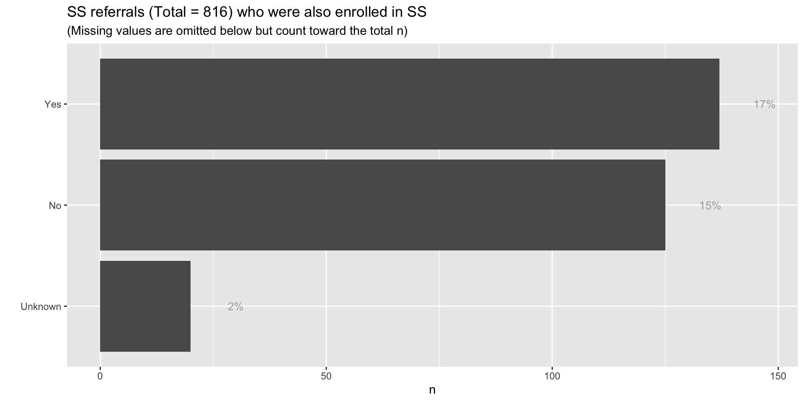
| Enrolled in Stabilization Services (for individuals 0-20 yo) | n | pct |
|---|---|---|
| Yes | 137 | 0.17 |
| No | 125 | 0.15 |
| Unknown | 20 | 0.02 |
| NA | 534 | 0.65 |
dispatch location and whether or not responders satisfied OHA’s response rule?county on response rule?mc_responders_1 or mc_responders_2 were coded as “None”. Counts in the table refer to the number of responder pairs. Values in red indicate pairs where there is only one responder or pairs where a QMHP is not involved (e.g. peer-peer, peer-none).| Counts of Responder Pairs | ||||||||||||||||||||
| QMHP (primary) | QMHA (primary) | Peer Peer | Peer None | Other Other | Other None | Other CADC | None None | None CADC | ||||||||||||
|---|---|---|---|---|---|---|---|---|---|---|---|---|---|---|---|---|---|---|---|---|
| QMHP | QMHA | Peer | Other | None | MP | CADC | QMHA | Peer | Other | None | MP | CADC | ||||||||
| Adapt (Curry) | 1 | 69 | 3 | 2 | 8 | 2 | 2 | |||||||||||||
| Adapt (Douglas) | 9 | 287 | 158 | 64 | 38 | 2 | 1 | 114 | 26 | 5 | 11 | |||||||||
| Benton County Health Department | 40 | 69 | 6 | 7 | 483 | 1 | 1 | |||||||||||||
| Best Care (Crook County) | 1 | 8 | 81 | 59 | ||||||||||||||||
| Best Care (Jefferson County) | 1 | 4 | 43 | 1 | ||||||||||||||||
| Center for Human Development | 228 | 48 | 54 | 11 | ||||||||||||||||
| Clatsop Behavioral Health | 102 | |||||||||||||||||||
| Columbia Community Mental Health | 17 | 51 | 4 | 1 | 7 | 1 | 6 | |||||||||||||
| Community Counseling Solutions (Gilliam) | 2 | 2 | ||||||||||||||||||
| Community Counseling Solutions (Grant) | 1 | 10 | ||||||||||||||||||
| Community Counseling Solutions (Morrow) | 1 | 1 | 1 | 38 | ||||||||||||||||
| Community Counseling Solutions (Umatilla) | 16 | 5 | 132 | |||||||||||||||||
| Community Counseling Solutions (Wheeler) | 2 | |||||||||||||||||||
| Coos Health and Wellness | 24 | 92 | 226 | 34 | 177 | 3 | ||||||||||||||
| Deschutes Behavioral Health | 28 | 154 | 4 | 168 | 1 | 2 | ||||||||||||||
| Jackson County Health & Human Services | 1 | 25 | 5 | 3 | 19 | 94 | 1 | 2 | 7 | |||||||||||
| Klamath Basin Behavioral Health | 51 | 390 | 380 | |||||||||||||||||
| Lake District Behavioral Health | 11 | |||||||||||||||||||
| Lane County Behavioral Health Services (WLCR) | 10 | 39 | 37 | 78 | 100 | |||||||||||||||
| Lane County Behavioral Health Services (Child Center) | 2 | 199 | 52 | 15 | 51 | 2 | ||||||||||||||
| Lane County Behavioral Health Services (White Bird) | 1884 | 896 | ||||||||||||||||||
| Lifeways, Inc. | 4 | 7 | 2 | 9 | 5 | |||||||||||||||
| Lincoln County Health and Human Services | 2 | 25 | 3 | 1 | 201 | 1 | 62 | |||||||||||||
| Linn County Mental Health | 2 | 50 | 503 | 42 | 2 | 84 | 1 | 25 | ||||||||||||
| Marion County Health Department | 333 | |||||||||||||||||||
| Mid-Columbia Center for Living | 4 | 17 | 216 | 3 | 8 | 1 | ||||||||||||||
| Multnomah County Behavioral Health Division | 703 | 287 | 375 | 84 | 1 | 6 | 7 | 12 | 47 | 119 | ||||||||||
| New Directions NW, Inc. | 29 | 1 | 12 | 4 | 1 | |||||||||||||||
| Options for Southern Oregon | 4 | 3 | 1 | 1 | 575 | |||||||||||||||
| Polk County Addiction and Mental Health Services | 2 | 179 | 1 | 1 | 1 | 2 | 23 | |||||||||||||
| Symmetry Care | 3 | 1 | 11 | 1 | 1 | 22 | 1 | 3 | ||||||||||||
| Tillamook Behavioral Health | 4 | 9 | 7 | 59 | ||||||||||||||||
| Wallowa Valley Center for Wellness | 1 | 53 | ||||||||||||||||||
| Yamhill County Health and Human Services | 14 | 42 | 12 | 12 | 91 | 1 | 27 | 1 | 39 | 3 | 2 | 21 | ||||||||
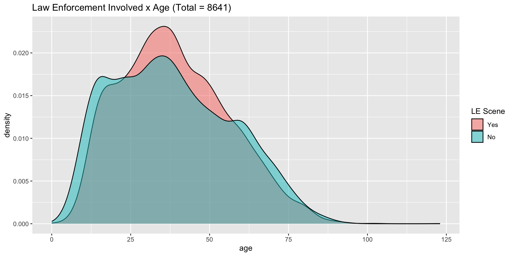
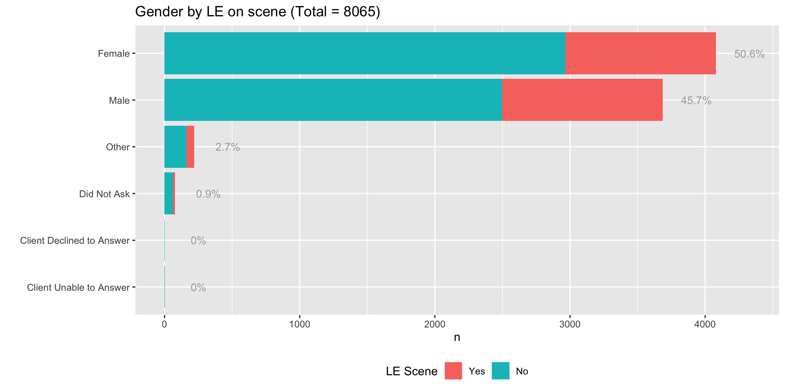
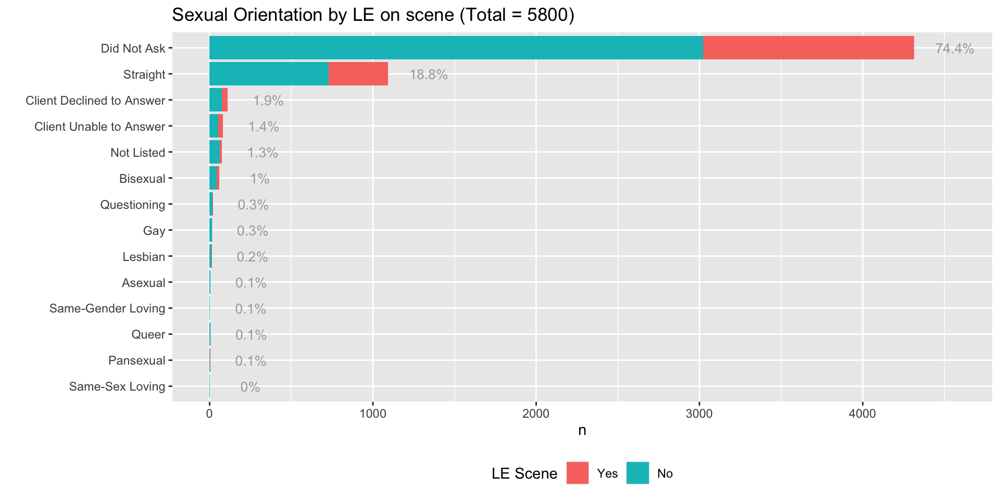
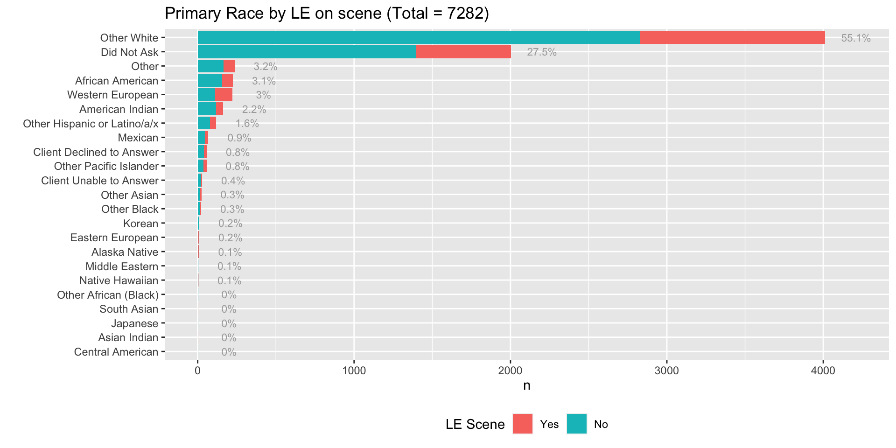
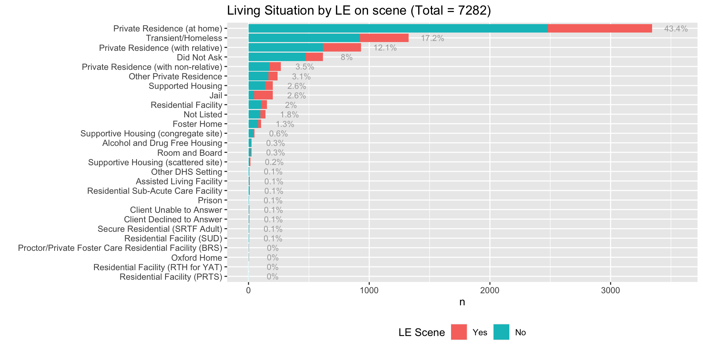
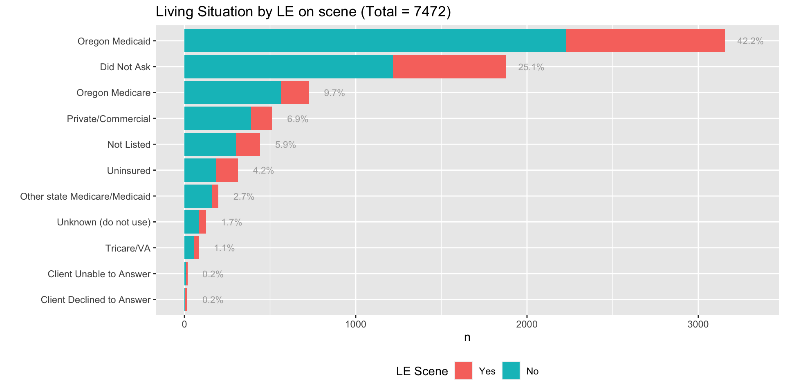
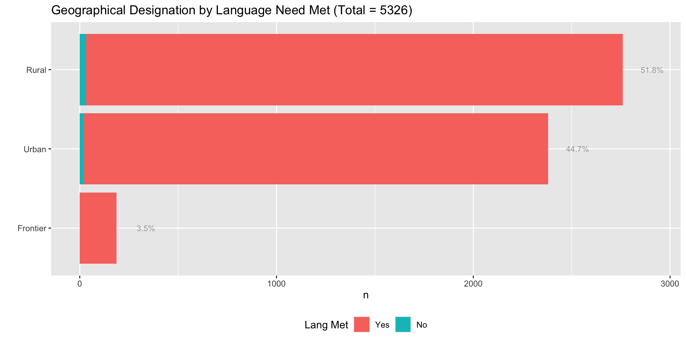
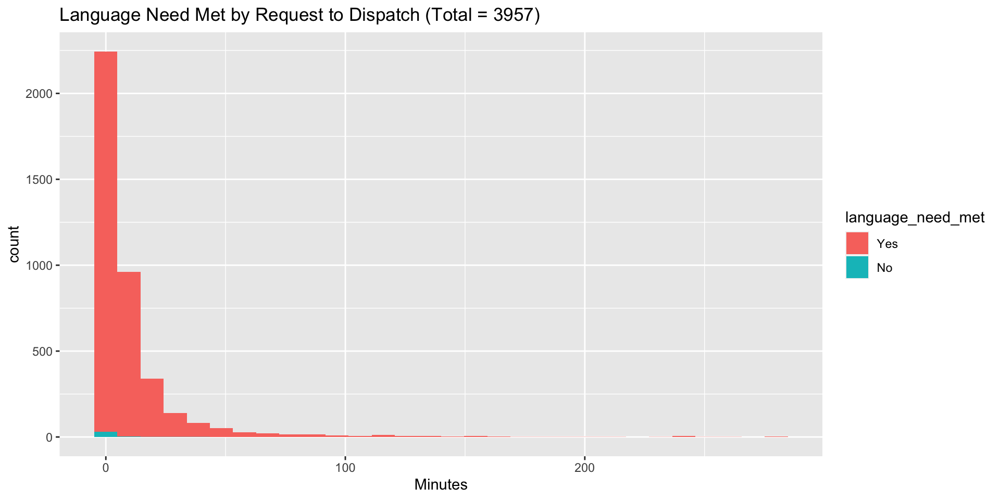
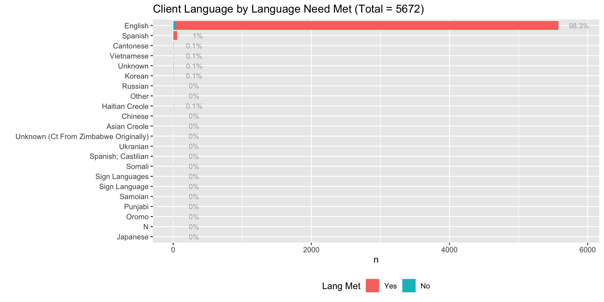
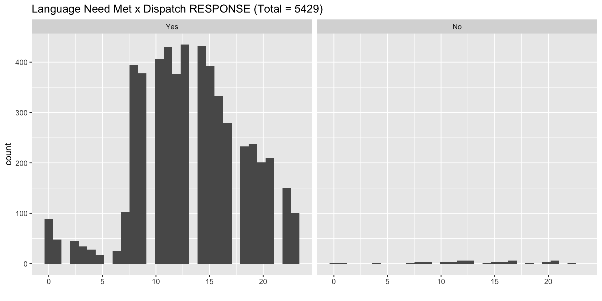
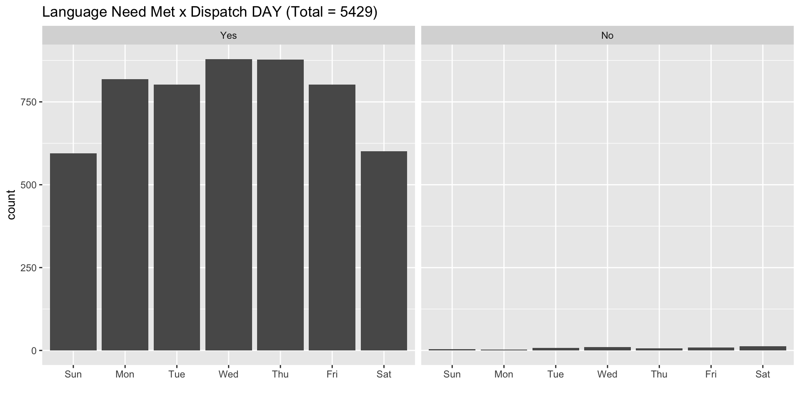
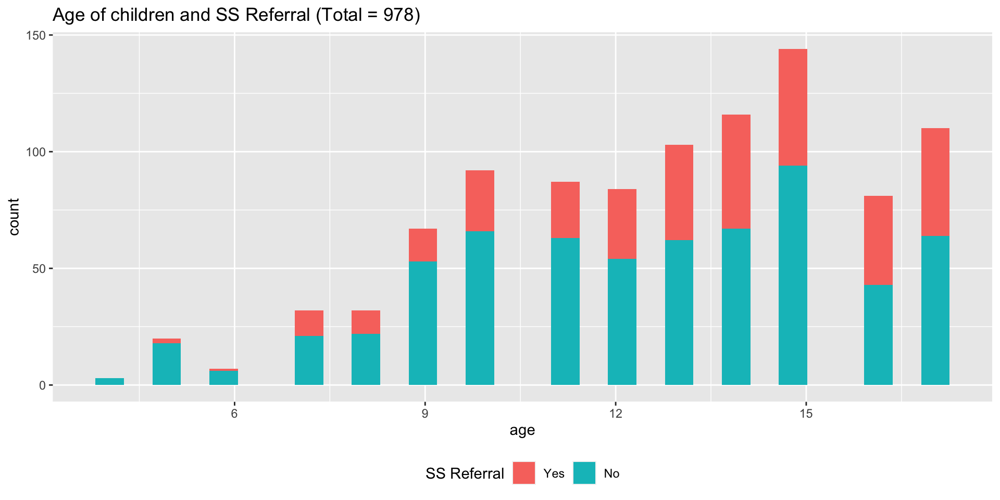
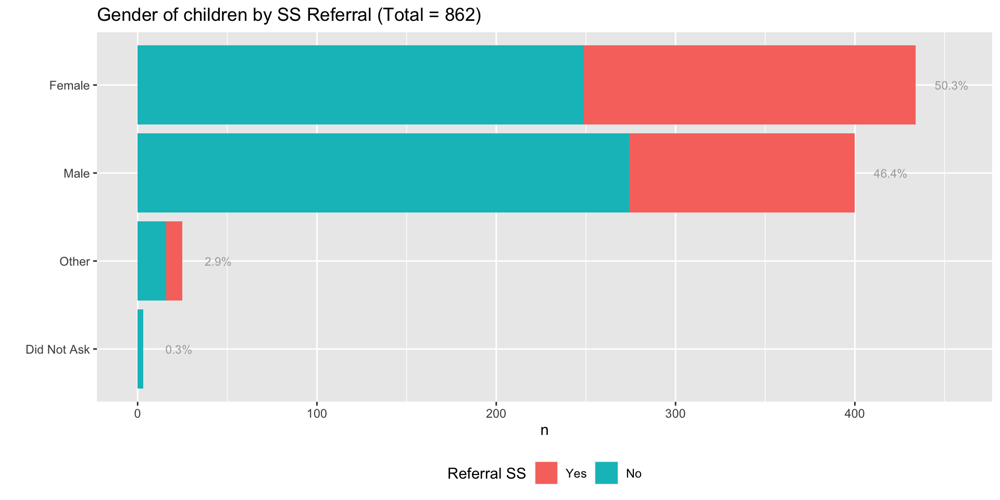
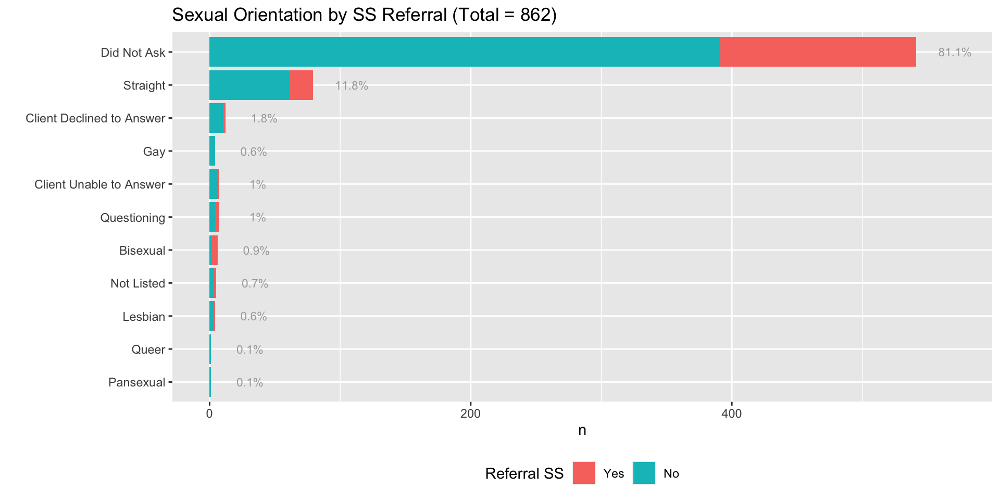
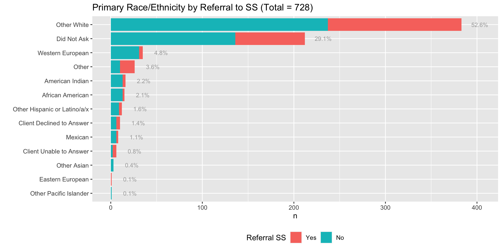
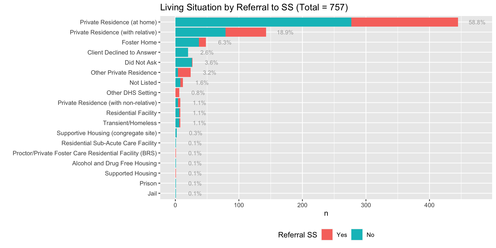
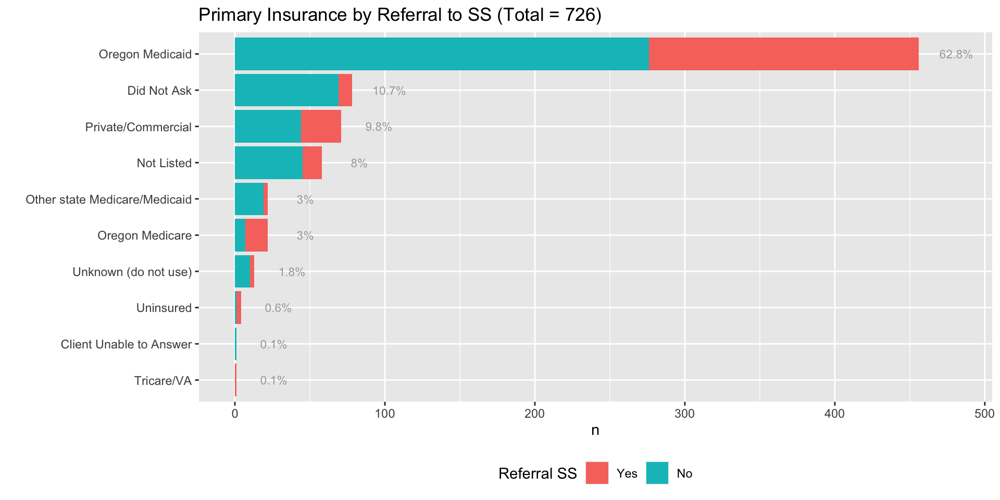